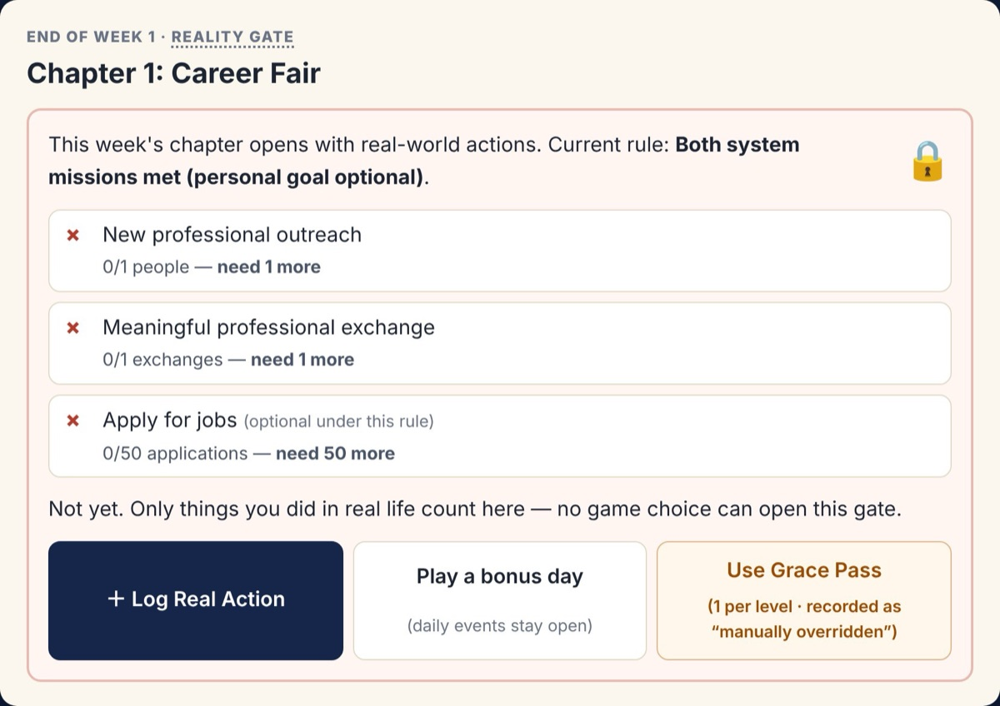
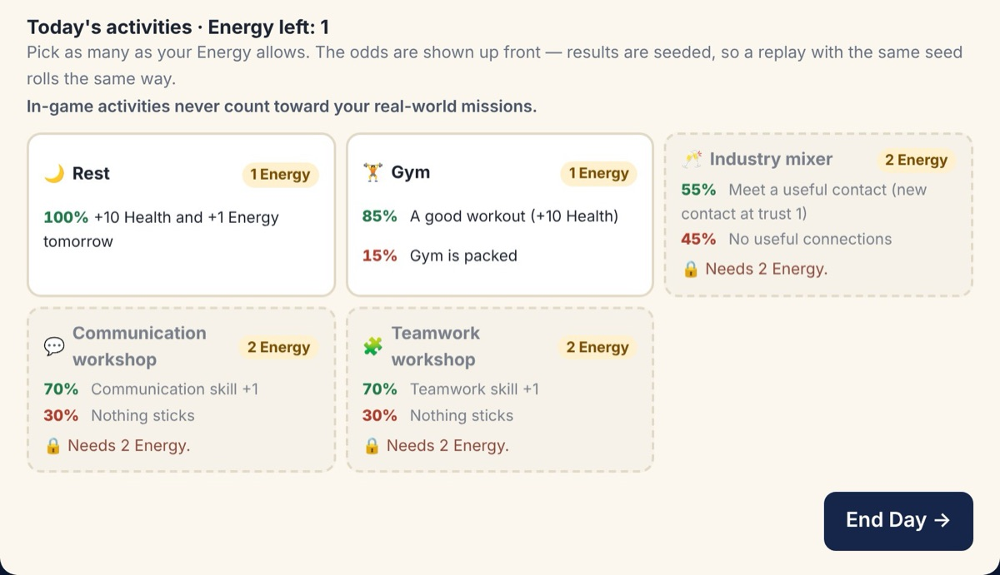
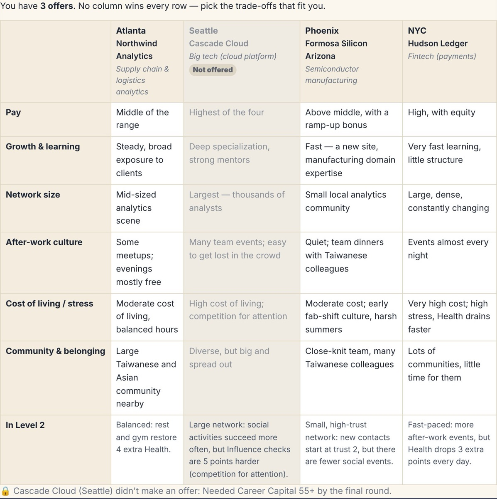
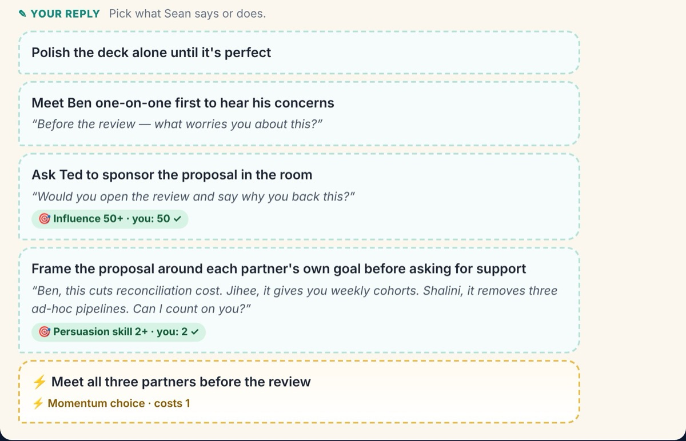
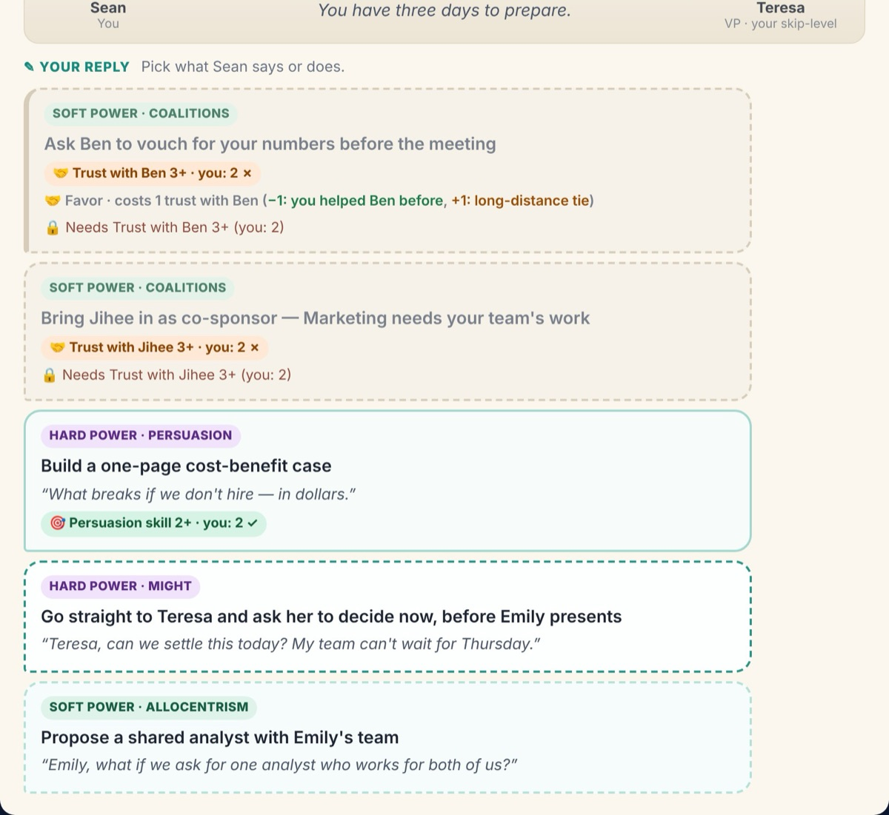
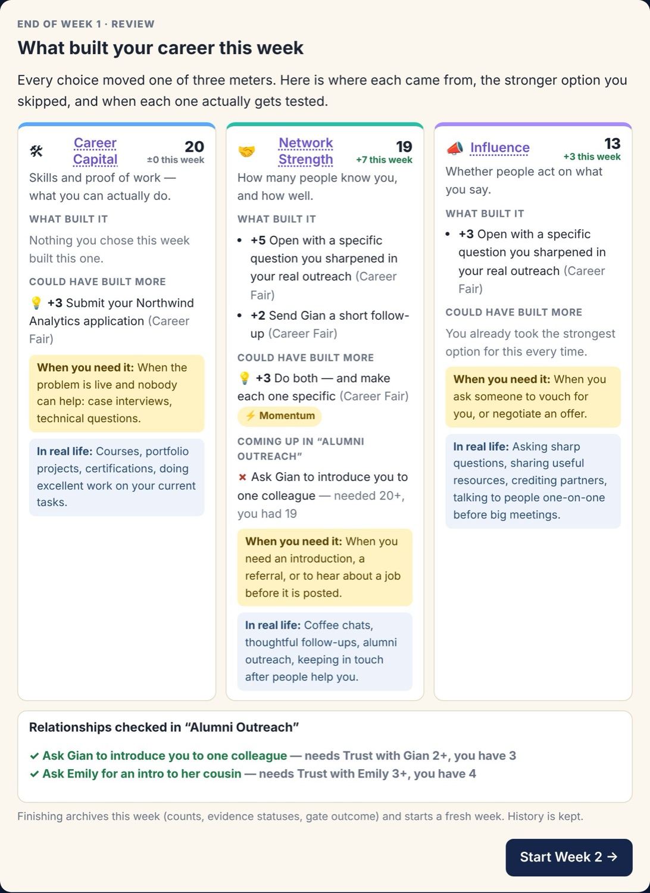

Network Quest: A Career Strategy RPG
Knowing networking matters is not the same as doing it. Network Quest is a career strategy RPG where real-world networking unlocks the story. The one rule: game choices never count. Only real-world actions open the next chapter.
The game asks for real outreach, so a casual visit would stop at the first gate. To see more:
- Click through the 4-step intro and the Level 1 prologue (“Skip ▸▸” speeds up any dialogue), then play Week 1, Day 1.
- Open 🎛 Demo Mode (bottom right) and jump to Week 5 of the level, or jump to the Reality Gate.
- Click Fill sample evidence (DEMO SAMPLE) and close the panel. The gate opens.
- Play Chapter 5, choose an offer, finish the weekly check-in, and start the next level.
How the game works
A weekly loop, daily decisions, and three levels built on course concepts.
A weekly loop with a Reality Gate
1. Play a day (2–5 minutes) A short dialogue, one choice, then activities with the odds shown up front.
2. See the consequences Career Capital, Network Strength, Influence and trust move; some pay off weeks later.
3. Hit the Reality Gate After Day 5 the chapter stays locked until this week’s real missions are met.
4. Log real actions → unlock Screenshot, reflection or self-report. Each log earns ⚡ Momentum for strong choices.

The gate lists what is missing. Players can log a real action, play a bonus day, or use one Grace Pass per level (recorded as “manually overridden”). Targets rise each week.
Inside a week: each day is one small decision
Visual-novel dialogue on the right, this week’s real missions on the left (actual / target).
- Energy: 3 a day for choices and activities
- Health: late nights cost Energy later
- Skills: workshops raise 3 skills (0–3)
- Trust 0–5: earn by helping, spend on favors

Level 1: Land a job offer
Final-semester MSBA student · 5 weeks
| Week | Story chapter | Networks | Exchange |
|---|---|---|---|
| 1 | Career Fair | 1 | 1 |
| 2 | Alumni Outreach | 2 | 1 |
| 3 | Coffee Chats | 3 | 2 |
| 4 | Interviews | 4 | 2 |
| 5 | The Offer | 5 | 3 |
Networks: reach out to someone new with a tailored message. Exchange: give or get useful insight in a real two-way conversation.
The Offer: 3 of 4 fictional offers (Atlanta, Seattle, Phoenix, NYC) appear depending on how you played. No option wins every row, so the choice is about trade-offs.

Level 2: Build support across teams
New data analyst · 5 weeks
| Week | Story chapter | Networks | Coalitions |
|---|---|---|---|
| 1 | Onboarding | 1 | 1 |
| 2 | Stakeholder Discovery | 1 | 1 |
| 3 | First Shared Project | 2 | 2 |
| 4 | Building Support | 2 | 2 |
| 5 | Leadership Presentation | 3 | 3 |
Networks: start or deepen a professional connection with anyone, inside or outside the company. Coalitions: engage a stakeholder about an idea, even if they disagree.
Your offer city matters: it changes the intro, events, starting modifiers and a Week 3 surprise (ramp delay, reorg, team expansion, manager leaves). A good decision is not a guaranteed outcome.
Level 1 choices carry over (“Remembered”). Strong options need Influence, skills or allies built earlier.

Level 3: Lead a team, win the budget
First-time manager · 5 weeks
| Week | Story chapter | Political Capital | Recognition / Feedback |
|---|---|---|---|
| 1 | New Manager | 1 | 1 |
| 2 | Team Diagnosis | 1 | 1 |
| 3 | Competing Priorities | 2 | 2 |
| 4 | The Budget Fight | 2 | 2 |
| 5 | Leadership Review | 3 | 3 |
Political Capital: build trust and support with your boss or senior managers. Recognition / Feedback: give a team member specific recognition or coaching feedback.
New meters: Team Morale and Political Capital. Every choice is tagged soft power (Team, Allocentrism, Coalitions) or hard power (Persuasion, Might, Ethos). Hard power is faster now; soft power takes setup but lasts.

Concepts in the mechanics
| Concept | How the game uses it |
|---|---|
| Reciprocity | Help someone first and their favor costs 1 less trust |
| Opportunity cost | 3 Energy a day; every option shows its cost |
| Networks | Real outreach opens each chapter; trust 0–5 per contact |
| Delayed consequences | “Remembered” callbacks across chapters and levels |
| Decision ≠ outcome | Odds shown up front; each offer brings a later surprise |
| Coalitions | Level 2 options need allies at trust 3+ |
| Soft vs. hard power | Level 3 tags: fast hard power vs. lasting soft power |
The week review shows what built each meter, the stronger option skipped, and when you need it next.

About this project
The story, characters, companies and offers are fictional. Evidence is never verified, the weekly email is a preview only, and your progress stays in your own browser.
AI disclosure: I designed the game, its missions, key concepts and ideas (from course content). AI helped with feasibility testing, the detailed script and the UI; Claude Code helped build the game and wrote detailed conversations and avatars.
Tools: HTML · CSS · JavaScript (ES modules) · no frameworks, backend or API calls
UCSD MSBA · MGTA 459 Managerial Decision Making · Fall 2026